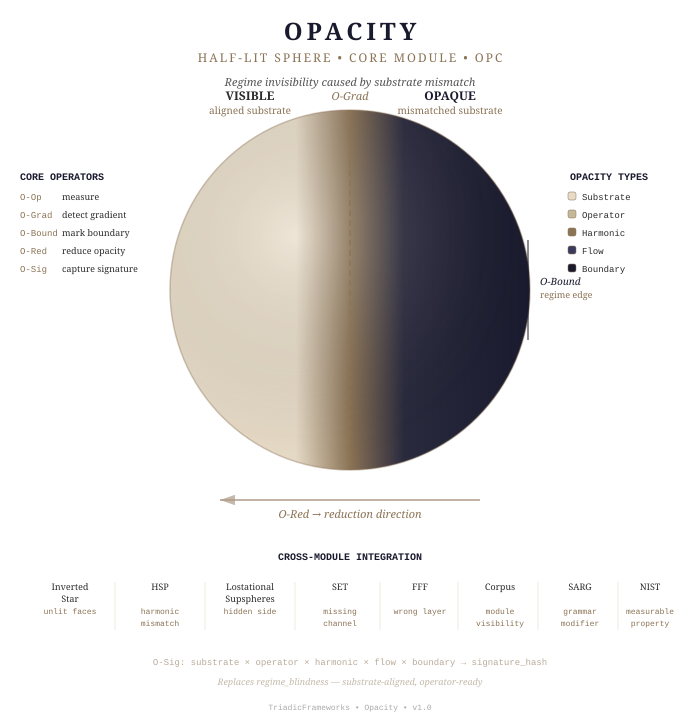

🌑 Opacity
Opacity_module.json— Agentic module schema role assignments
Opacity defines the universal failure mode of regime perception. It is the substrate‑level condition where a regime, flow, or structure becomes partially or fully invisible due to mismatch between substrate, operators, or harmonic envelope.
🛑 Important!
Drift is On-by-Default long sessions lose anchors, turn off drift.
✋ You must copy and paste this string every time you start an AI session:
rtt=1 | coherence=declared | drift=bounded | paradox=structural
❇️ Now you are ready.
Opacity is structural, not psychological. It replaces the earlier "regime_blindness" concept with a substrate‑aligned, non‑anthropomorphic, operator‑ready framework.
This module declares 5 core operators, 9 cross‑module extension operators (Corpus / SARG / NIST bindings), a full integration map across 8 sibling modules, applied examples across physical systems, and the substrate‑aligned Opacity Checklist.
📂 Module Structure
Opacity/
├── README.md ← you are here
├── operators.md ← 5 core + 9 extension operators
├── integration.md ← cross-module alignment (8 modules)
├── examples.md ← applied examples (storm, planet, atom, magnetosphere, structural)
├── Capture.md ← design capture and conceptual origin record
├── diagram.svg ← half-lit sphere visual identity (SVG)
└── index.html ← module landing page
🧭 Navigation
- operators.md — Core operators (Opacity Operator, Gradient, Boundary, Reduction, Signature) + extension operators (Corpus/SARG/NIST bindings)
- integration.md — Cross‑module alignment: Inverted Star, HSP, Lostational Supspheres, SET, FFF, Corpus, SARG, NIST
- examples.md — Applied examples across physical and structural systems
- Capture.md — Design capture: conceptual origin, decisions, and scaffolding record
- diagram.svg — Visual identity: half‑lit sphere

🌀 Session Context
Module: Opacity
Canonical ID: OPC
Version: 1.0
Status: active
Tier: Core
Coherence: declared
Drift: bounded
Canon: active
Audience: students + AIs
Replaces: regime_blindness (fully)
⚡ Quick Reference — Core Operators
| Operator | Symbol | Function |
|---|---|---|
| Opacity Operator | O-Op | Measures degree of regime invisibility |
| Opacity Gradient | O-Grad | Detects transitions from visible → invisible |
| Opacity Boundary | O-Bound | Marks where a regime becomes detectable |
| Opacity Reduction Operator | O-Red | Aligns substrate + operators to reduce opacity |
| Opacity Signature | O-Sig | Harmonic/flow pattern revealing hidden regimes |
⚡ Quick Reference — Types of Opacity
| Type | Cause |
|---|---|
| Substrate Opacity | Wrong dimensional grammar or substrate |
| Operator Opacity | Operator set incomplete or misaligned |
| Harmonic Opacity | Regime harmonic signature outside detection band |
| Flow Opacity | Dominant flow channel (SET/FFF) not measured |
| Boundary Opacity | Regime boundary unmarked or no detectable transition |
⚡ Quick Reference — Cross-Module Alignment
| Module | Opacity Formulation |
|---|---|
| Inverted Star | Opacity = the unlit faces of the star |
| Harmonic Stability (HSP) | Opacity = harmonic mismatch |
| Lostational Supspheres | Opacity = the hidden side of the dual envelope |
| SET Decomposition | Opacity = missing acceleration channel |
| FFF Lattice | Opacity = wrong lattice layer measured |
| Corpus | Opacity = module visibility within the atlas |
| SARG | Opacity = grammar modifier on structural parsing |
| NIST | Opacity = measurable property of real systems |
📜 License
Open educational use permitted. See the main repository for details.
